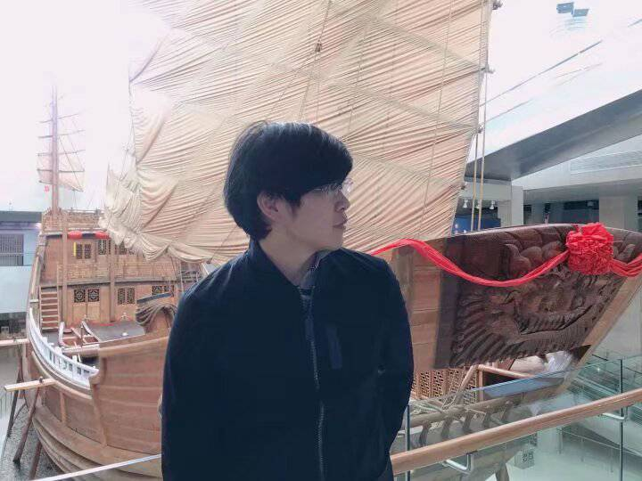
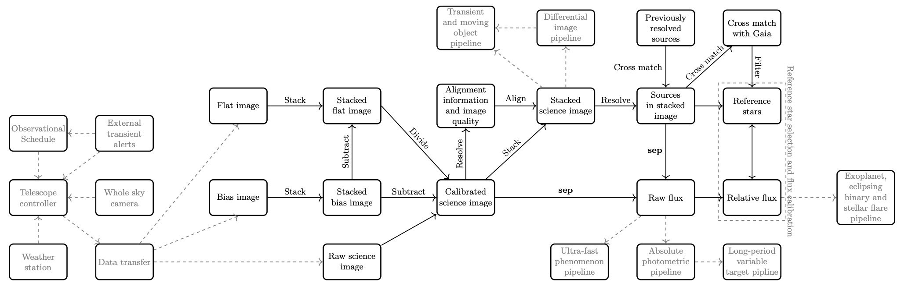
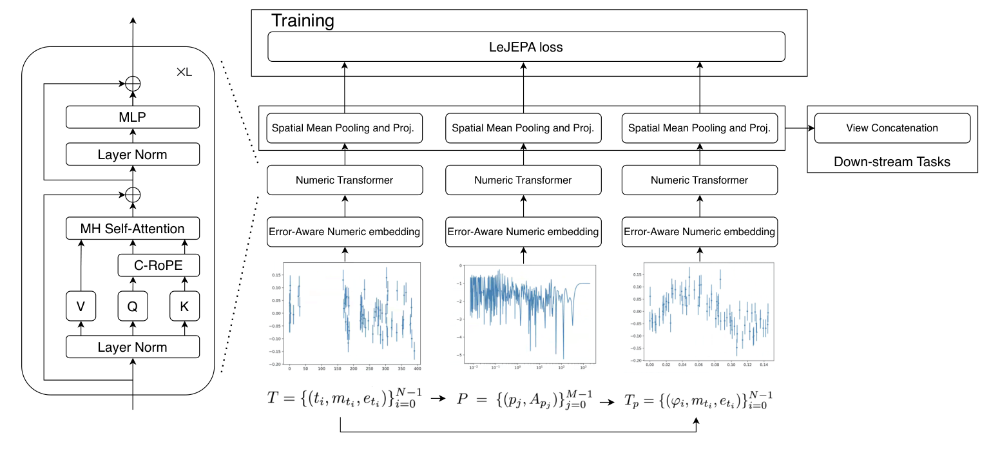
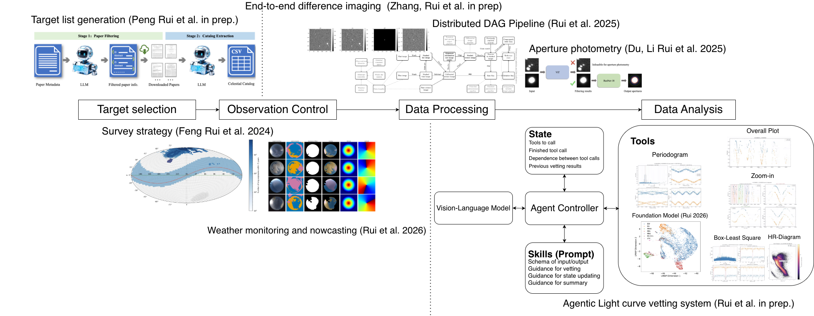
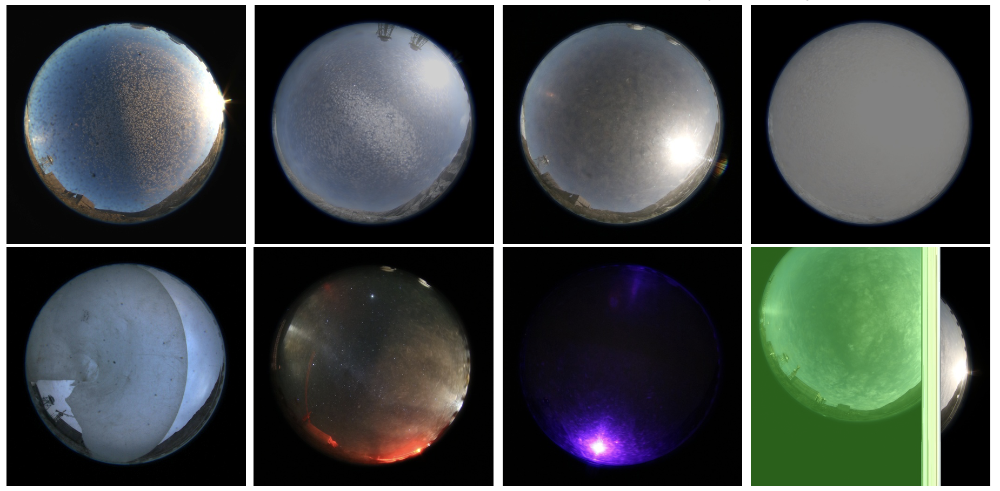
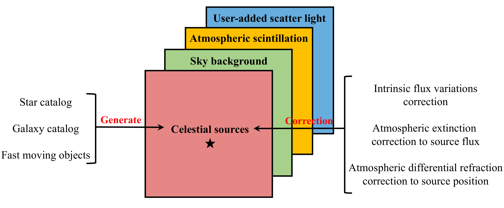
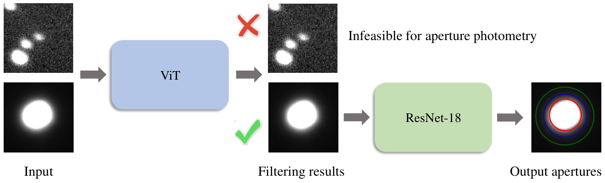
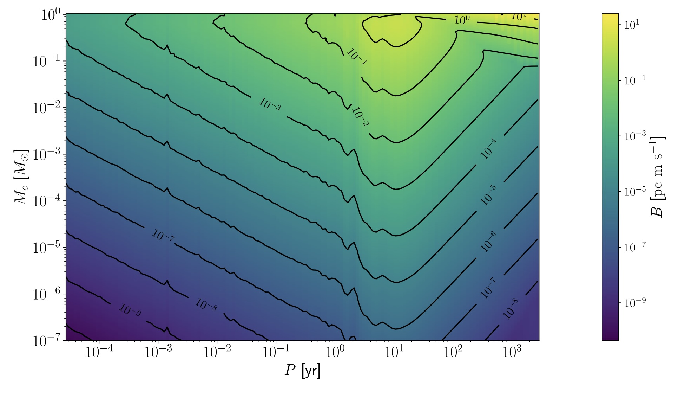
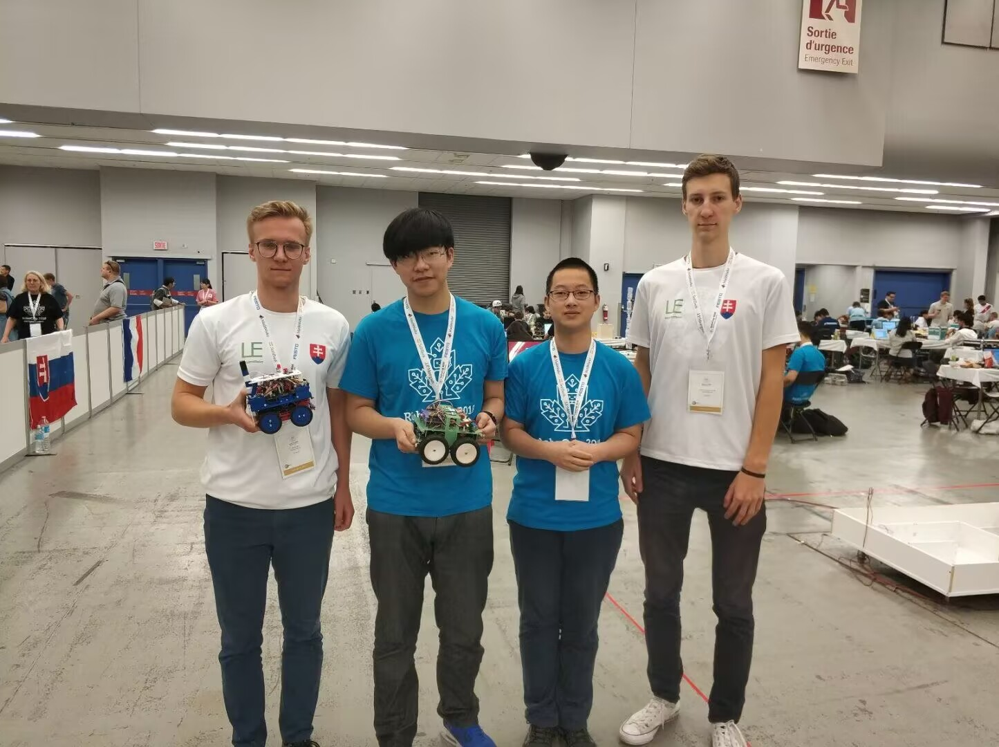

PhD Candidate in Astronomy @ Shanghai Jiao Tong University
I am a PhD candidate in Astronomy at the Tsung-Dao Lee Institute, Shanghai Jiao Tong University, advised by Prof. Fabo Feng. I expect to complete my PhD in June 2027. My research connects exoplanet detection and time-domain astronomy with AI for science and scientific evaluation of AI.
Large astronomical surveys produce far more observations than researchers can inspect individually. I develop tools that turn these data into reliable measurements and interpretable scientific evidence, from observation control and distributed data processing for the Tianyu telescope to high-precision photometry, astrometry, and realistic sky-image simulation.
Building on this work, I study representation learning for irregular light curves and develop AI agents that combine catalog information, period searches, and visual diagnostics to assess variable stars. I also contribute astronomy tasks and reviews to Terminal-Bench Science to evaluate how AI agents handle scientific analysis.
Outside research, I enjoy classical music, history, astrophotography, Dota 2, and robotics.
Tsung-Dao Lee Institute, Shanghai Jiao Tong University | 2022 - Present
Advisor: Prof. Fabo Feng | Expected graduation: June 2027 | GPA: 4.0/4.0
Shanghai University | 2018 - 2022
Advisor: Prof. Xianhui Ge | GPA: 3.93/4.0

Tianyu is a 1-meter robotic survey telescope in Lenghu, built to study exoplanets, variable stars, and transients.

Irregular sampling and measurement noise make astronomical light curves challenging for general-purpose time-series models.

Variable-star vetting requires combining numerical tests, diagnostic plots, and source context into a traceable assessment.

Reliable cloud monitoring supports astronomical site characterization and autonomous telescope scheduling.

Rare astronomical events and complex observing conditions make realistic simulations essential for validating survey pipelines.

Choosing suitable sources and apertures is a computational bottleneck in high-precision survey photometry.

Errors in stellar astrometry can bias barycentric corrections and obscure the weak radial-velocity signals of Earth-like planets.

Participated in RoboCup@Home and RoboCup Junior Maze, working on hardware control and autonomous navigation.
† Corresponding author.
Yicheng Rui†. Preprint. arXiv:2606.28446.
Kexin Li, Yicheng Rui†, Fabo Feng, et al. The Astronomical Journal, 172, 56.
Yicheng Rui†, Xiao-Wei Duan, Licai Deng, et al. CVPR 2026 Findings. arXiv:2603.16429.
Kaiming Cui, Guang-Yao Xiao, Fabo Feng, Beibei Liu, Sergei Nayakshin, Cassandra Hall, Kangrou Guo, Dong Lai, Masahiro Ogihara, Yicheng Rui, et al. PNAS, 123, e2524764123.
Shuyue Zheng, Fabo Feng, and Yicheng Rui. The Astronomical Journal, 171, 64.
Zhengjun Du, Qingquan Li, Yicheng Rui†, et al. Research in Astronomy and Astrophysics, 25, 104003.
Yicheng Rui†, Yifan Xuan, Shuyue Zheng, et al. Publications of the Astronomical Society of the Pacific, 137, 064501.
Fabo Feng, Yicheng Rui†, Zhimao Du, et al. Acta Astronomica Sinica, 65, 34.
Yicheng Rui and Fabo Feng. Monthly Notices of the Royal Astronomical Society, 527, 11288–11303.